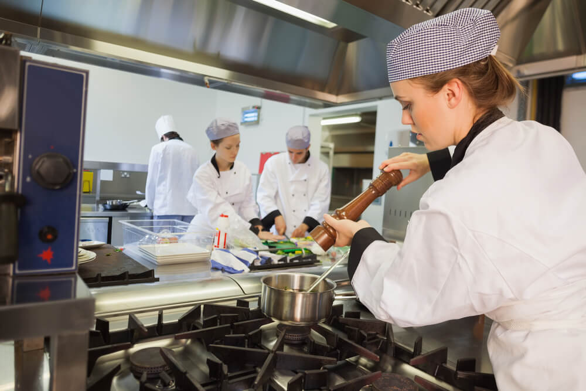
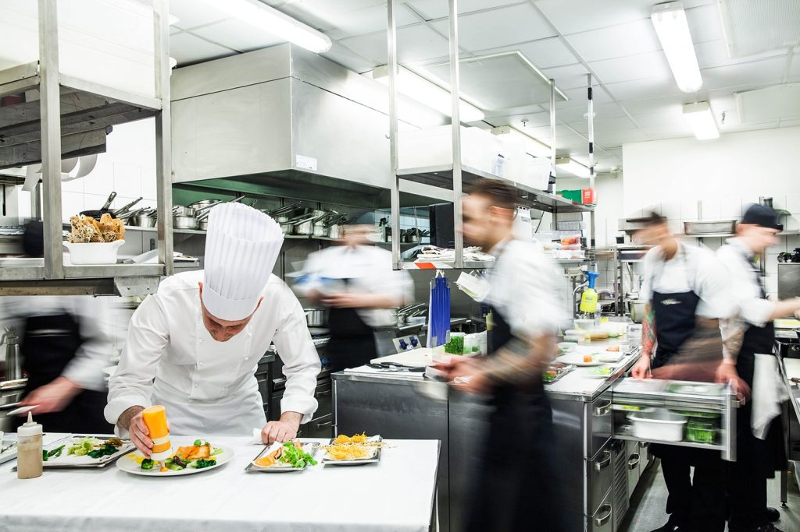

Quem somos?
Bem-vindo ao mundo saboroso e criativo da gastronomia! O nosso grupo de treinamento gastronômico é um ambiente onde apaixonados por comida se reúnem para explorar, aprender e aprimorar suas habilidades culinárias. Aqui, mergulhamos de cabeça no universo da culinária, desde os conceitos básicos até as técnicas mais avançadas, tudo enquanto celebramos a diversidade de sabores e culturas que o mundo tem a oferecer.
Nossa missão é muito mais do que apenas ensinar receitas; buscamos inspirar, cultivar a paixão pela gastronomia e transformar amadores em chefs habilidosos. Seja você um iniciante curioso ou um entusiasta experiente, nossos programas de treinamento são projetados para atender a todas as necessidades e níveis de habilidade.
Nossos instrutores são chefs renomados e especialistas no campo da culinária, prontos para compartilhar seus conhecimentos e experiências. Além disso, promovemos um ambiente colaborativo, onde os participantes podem aprender uns com os outros, trocar ideias e criar laços duradouros.
Prepare-se para uma jornada deliciosa de descobertas culinárias enquanto exploramos ingredientes, técnicas e culturas culinárias de todo o mundo. Esteja pronto para despertar seu paladar, desafiar suas habilidades e, acima de tudo, se divertir muito no processo.
Junte-se a nós e embarque nessa aventura gastronômica emocionante, onde a criatividade e a paixão pela comida se encontram para criar experiências inesquecíveis. Vamos começar a cozinhar!

